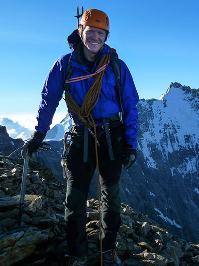

What do I like to do?
I seek adventurous, moderately technical alpine climbs in my own neighborhood. With a busy family and work life, I am not able to make time for expedition mountaineering. I also hate sitting in a tent for days, so I value flexibility in planning, preferably having an alternate goal in a drier region or maybe changing from climbing to hiking if the weather is rainy.
I don’t really do “pleasure trips.” For me, the relaxation comes as a warm glow at the close of a big adventure. Time is limited, and we must do as much as we can with it! At the same time, I believe laughter and friendship are an essential part of the mountain experience and I value them highly.
I know the mountains are a place of risk and danger. I seek to minimize the risk by travelling light, moving fast, and keeping in practice for moving smoothly over alpine (dangerous) terrain. At the same time, I love to climb traditionally protected routes, where routefinding ability and protection placement skills can be exercised.
I’ve written articles about alpine climbing on Summitpost here and here. I’ve also had the great honor to spend a few days climbing with my friends Aidan Haley and Fred Beckey on his first climbing trip to Europe. We spent 5 days in the Dolomites, and Aidan made a movie about the trip here.
What are my skills?
- I comfortably lead alpine rock to 5.10b YDS (about VI+ UIAA).
- I will follow “anything,” though I prefer routes where I can lead half the pitches.
- On ice, I lead to WI4.
- Familiar and practiced with glacier travel and crevasse rescue techniques.
- I am comfortable on loose, exposed alpine terrain, and can solo mid-5th class when required.
- I have climbed up and down 2600 meters in a day (though it was tough!). A typical mountain day for me will involve 1500-2000 meters of climbing, depending on the activity.
- I enjoy long ~12-16 hour days in the mountains, and like an early start.
- Moderate ski touring ability. Ascent/descent of 2000 meters as a day trip.
- Good map/compass/altimeter navigation skills.
What have I done?
Here are some of the routes I’ve climbed in different areas.
European rock
In the Wilder Kaiser
- Kopfkraxen “Via Romantica” (VI+), “Blue Moon” (VI+)
- Totenkirchl, “Kirchlexpress” (VI, bolted), “Dülfer Westwand” (VII-/A0)
- Fleischbank, “Via Classica” (V, bolted), “Dülfer Ostwand” (VI+/A0)
- Predigtstuhl, Nordkante (IV+)
- Christaturm, “Christakante” (VI+)
- Kleine Halt, “Via Aqua” (VII-, 26 pitches)
- Bauernpredigtstuhl, “Alte West Wand” (VI+), “Rittlerkante” (VI+)
- Elmauer Halt, “Kopftörlgrat” (IV+)
In the Dolomites
- Salamiturm, “Comici” (VI+)
- Ciavazes “Big Micheluzzi” (VI)
- Pordoispitze “Via Fedele” with Dibona finish (V), 25 pitches
- Kleine Zinne, “Gelbe Kante” (VI+)
- Tofana des Rozes:
- 3rd Pillar “Costantini/Ghedina” (VI-)
- 1st Pillar (V)
- South Face “Dimai” (once solo at IV+, once with V+ variant)
- 3rd Sella Tower, “Vinatzer” (VI-)
- Sas Ciampac, “Geschweifter Kamin” (IV+), and OTHER
- Pala di San Martino, Gran Pilaster Route (UIAA IV+)
- Pala del Rifugio, “Castiglioni/Destassis” (V+)
- Fünffingerspitzen, full traverse (IV, 18 pitches)
- Punta Fiames, Spigolo Jori (V+, 16 pitches)
- Campanile Basso, Fehrmann / Pruess, (V)
- Grohmannspitze, South Face
- Langkofel, Nordkante (IV+) (2002), “Ramp route” (IV+, accident!)
- Vajolet Towers traverse
- Rosengartenspitze, East Face “Steger” (VI)
- Punta Emma: “Steger” (V+), “Fedele” (V-)
- Cinque Torre: “Via Miriam” (V), “Via Olga” (V+)
Other places
- The Schüsselkarspitze, “Peters/Haringer” Route (VI+/A0)
- Geiselstein, Alte Nordwand (V, 16 pitches)
- Martinswand:
- Ostriss (VI-)
- Auckenthalerriss (VII-)
- “Maxl’s Gamsrevoir” (VII-)
- Burschlwand: many routes leading to VII- (bolted)
- “Sternschnuppe” (VII-, bolted)
- “Herzschlag der Leidenschaft” (VII/A0, bolted, 32 pitches)
- “Alpstein Marathon” (6b/A0, 21 pitches)
- Grunduebelhorn, South Ridge (V)
- Tannheimer Mountains: many routes on Gimpel, Rote Flueh, Gimpelvorbau, Hochwiesler
- Aiguille Dibona: several routes to 6b
- Watzmann, East Face (III+), solo
- Laliderspitze “Herzogkante” (V)
European snow/ice
- Many ski tours in the Stubai, Silvretta, Dolomites, etc.
- Mont Blanc via Innominata Ridge (D/D+)
- Aiguille Verte, Charlet Couloir/Grade Rocheuse S Buttress/Whymper, down Moine Ridge (D-?)
- Gran Combin, NW Face (D-)
- Mont Blanc du Tacul, Diable Ridge (D+)
- Mont Maudit, “Frontier Ridge” aka Kuffner (D)
- Alphubel-Taeschhorn-Dom Traverse through Domjoch (D)
- Obergabelhorn, Arbengrat traverse (AD)
- Cosmique Arete (solo)
- Zinalrothorn, SE Ridge (AD-)
- The Matterhorn, Hörnligrat (AD-)
- The Jungfrau, Rottal Ridge
- Lagginhorn, North Ridge, traverse over Fletschhorn (AD)
- Piz Palue, Nordwand Ostpfeiler
- Ortler
- North Face (D+)
- Hintergrat (AD), solo
- Austrian north faces:
- Wildspitze (AI3)
- Taschachwand
- Petersenspitze
- Hochfeiler
- Hochferner
- Grossglocker, “Studlgrat”
- Zugspitze
- Jubiläumsgrat, winter
- Höllental approach, solo, winter
- Stopselsteig
- “Walkers Haute Route,” solo walk from Zermatt to Chamonix (some cheating)
Washington State
- Mount Baker, North Ridge - in a long day
- Mount Redoubt, North Face
- Picket Range wilderness traverse (glaciers, steep snow, routefinding) - this 7 day journey included a climb of Mount Fury’s North Buttress and Mount Terror’s North Face.
- Forbidden Peak, complete North Ridge - in a long day
- Mount Goode (WA), Northeast Buttress
- Ptarmigan Traverse - 7 days with peakbagging along the way
- Colchuck Peak, Northeast Buttress (5.8 YDS)
- Mount Stuart: North Ridge (5.9 YDS), Stuart Glacier Couloir, Ice Cliff Glacier and West Ridge (5.7)
- Dragontail Peak, Serpentine Arete (5.8 YDS)
- Prusik Peak, West Ridge (5.7)
- Green Giant Buttress, “Dreamer” (5.9 YDS) (2002)
- Snow Creek Wall: “Orbit” (5.8) and “Outer Space” (5.9)
- Cutthroat Peak, East Face Couloir, WI4-5 (Alex did the hard bits)
- Chair Peak, North Face and Northeast Buttress (2002)
- Index Town Wall: Toxic Shock, Roger’s Corner, Princely Ambitions, Great Northern Slab, Pisces
California
- Fairview Dome, Regular Route (5.9 YDS)
- Matthes Crest, complete traverse (5.8 YDS)
- DAFF Dome, West Face (5.9)
- Cathedral Rock and Eichorn Pinnacle (5.7)
- Bear Creek Spire, Northeast Ridge (5.8)
- Royal Arches (5.9 / A0)
British Columbia
- Sleese Mountain, Northeast Buttress (5.9 YDS)
- Mount Sir Donald, Northwest Ridge (5.5 YDS) - simul-solo ascent car to car
- McTech Arete (5.10a)
- Pigeon Spire, regular route, solo
- Bugaboo Spire, Northeast Arete (5.8 YDS)
- Snowpatch Spire, “Snowpatch Route”)